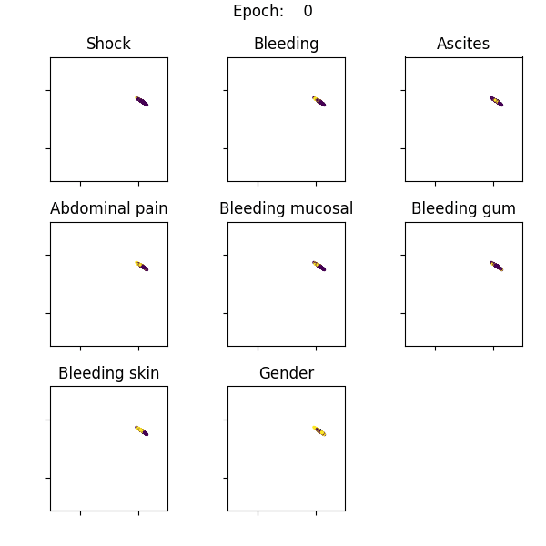

pkgname
Example Galleries
Dataset analysis
The manifold TSNE gallery
The self-organising map gallery
Auto-encoders for dimensionality reduction
Other DR techniques
Result analysis
Dissertation figures
Autoencoder experiment dissertation figures
SOM experiment dissertation figures
t-SNE experiment dissertation figures
The visualizations
The Widgets’ gallery
pkgname
»
Welcome to fyp2020-oss1017’s documentation!
View page source
Welcome to fyp2020-oss1017’s documentation!
¶

Indices and tables
¶
Index
Module Index
Search Page